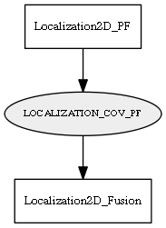

Global overview
All modules
All variables
All commands
Mission files
Pipelines
Variable: LOCALIZATION_COV_PF
Variable info:
Variable name
Short description
Who publishes it?
Who subscribes to it?
LOCALIZATION_COV_PF
The robot estimated pose uncertainty, as a 3x3 covariance matrix for [x y yaw]
Localization2D_PF
Localization2D_Fusion
Variable graph:

Detailed description:
The robot estimated pose uncertainty, as a 3x3 covariance matrix for [x y yaw]
Page generated by
Mooxygen 1.1.0
at Thu Jan 22 11:30:21 2015